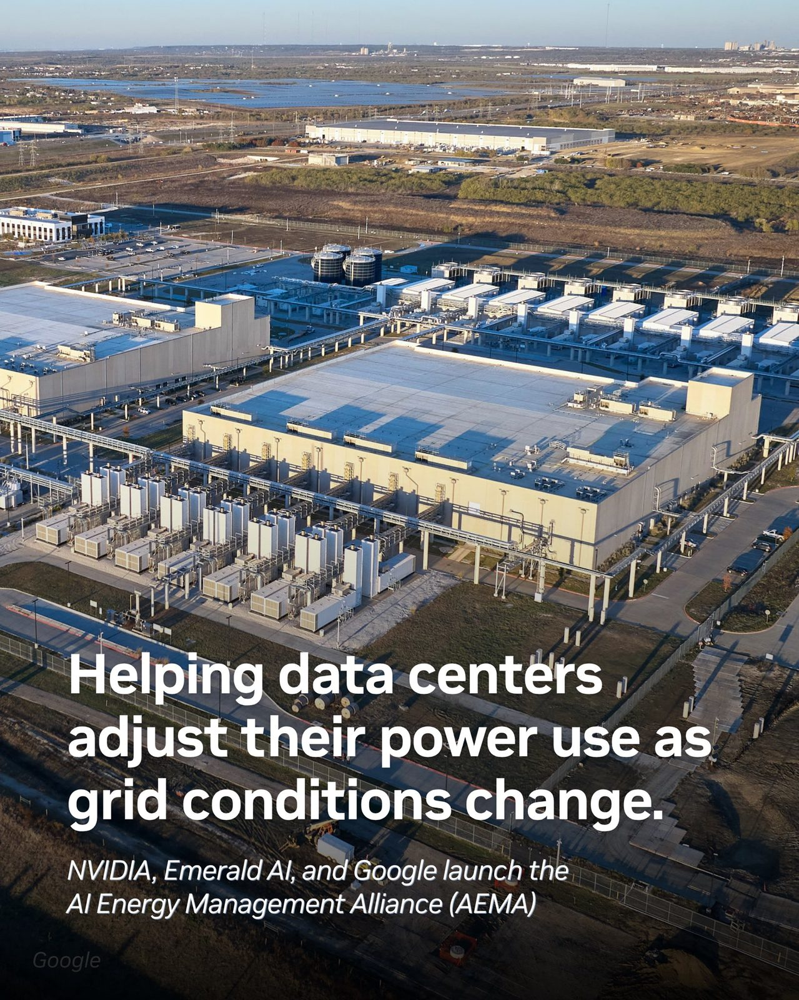
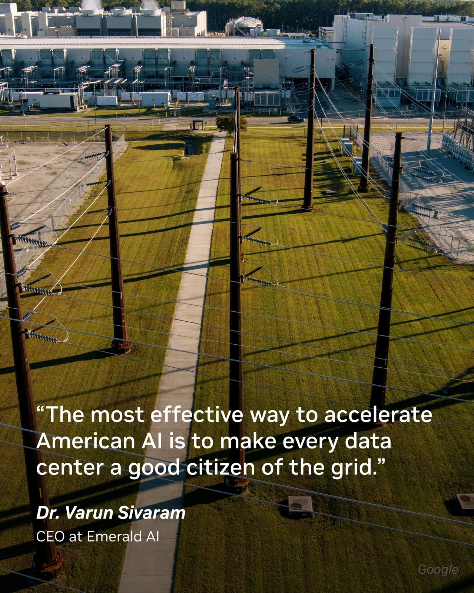
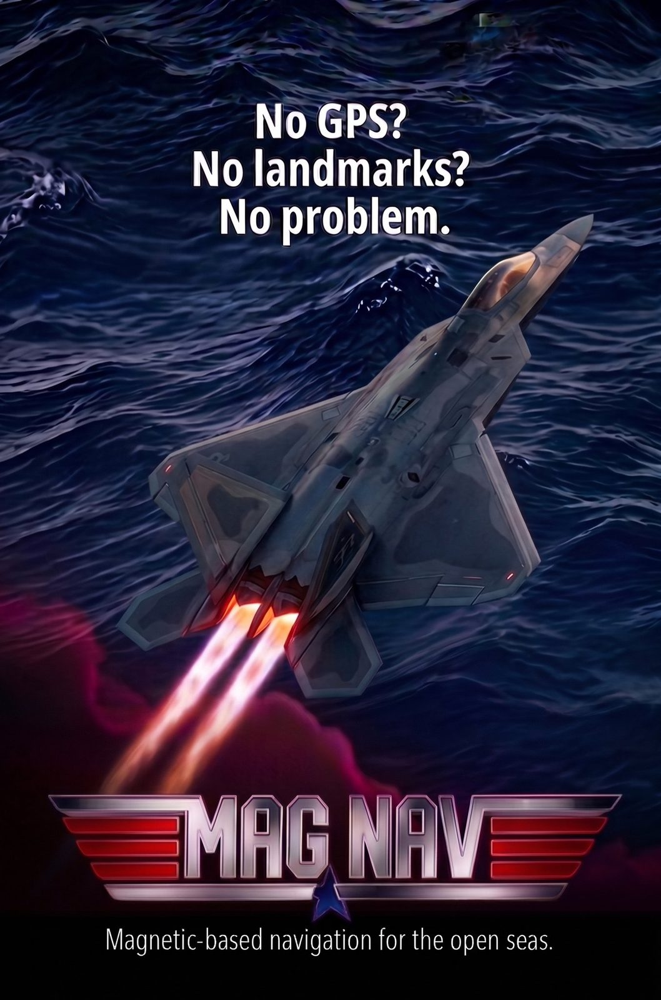
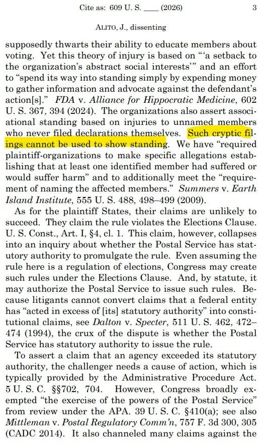
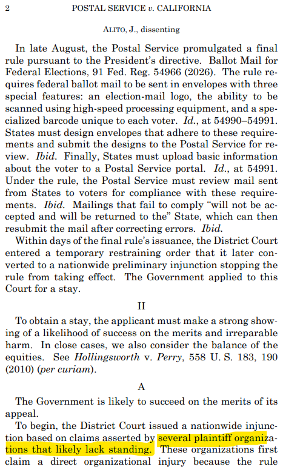

BREAKING: The Federal Reserve officially hikes interest rates by 25 basis points, marking its first rate hike since July 2023. This ends the longest Fed interest rate pause since 2008.
NEWS: NVIDIA, @EmeraldAi_, and @Google launched the AI Energy Management Alliance (AEMA) to accelerate the interconnection of flexible, grid-enhancing data centers, strengthen reliability, and protect affordability.
By shifting computing workloads, using stored energy or temporarily reducing demand when the grid is strained, flexible data centers can help unlock faster, larger connections for AI infrastructure while supporting the energy systems and communities that make its growth possible.


Captured this drone footage yesterday. Alot of activity at the newly acquired 444 acres SpaceX site along Hwy 4 near Starbase.
▶ Watch on XDuring mass casualty events, survivable injuries can become fatal simply due to a shortage of available surgeons. We are calling on innovators in robotics, AI, and medicine to help us address this critical gap with the launch of the DARPA Surgical Competition (DSC).
We're turning the planet's crust into an invisible, unjammable map.

JUST IN: Apple $AAPL is developing enterprise servers powered by its own chips.
🚨 BOMBSHELL: Supreme Court Justices Sam Alito and Clarence Thomas CALLED IT PERFECTLY in Alito's dissent against the 7-2 ruling, which blocked President Trump's USPS mail-in integrity order
The activist groups that SUED Trump likely did NOT EVEN HAVE STANDING, even though their faulty claims were the basis for activist judges holding up the US Postal Service for MONTHS
The tactic was to delay, delay, delay until SCOTUS would have no choice but to worry it's too close to an election
Donald Trump's executive order was NOT unconstitutional, so Democrats' game was to collude with activist judges and wrongly claim standing to run out the clock
WE HAVE A SERIOUS PROBLEM in this country with activist groups WEAPONIZING courts!


My thanks go to everyone who put so much effort into the CLARITY Act— across the Administration, Congress, investors, and innovators. Our collective conviction that America must continue to lead is indispensable.
I have been unequivocal: with or without legislation, we will act decisively within the SEC’s statutory authority to deliver certainty for American investors and for the entrepreneurs shaping our technological future.
Stay tuned.
We are pleased to welcome @Ondo Finance's subsidiary, Oasis Pro Markets, to our Fund/SERV platform.
As the first tokenization company to join the network, this milestone bridges traditional and digital finance and supports the continued evolution of capital markets. Read more:
🚨 EXCLUSIVE: Paramount to leave California, according to the L.A. Mayor's office and the California Attorney General's office.
What we know:
California high speed rail paid for consultants' trips to tiki bar, gym and 'escape room' as blown expenses revealed
BREAKING: In a major shift, the European Union has officially proposed making Canada the bloc’s first-ever “associate member.”
Details include:
1. European Commission President von der Leyen said Europe needs to "tighten its cooperation with like-minded democracies"
2. von der Leyen also says this would retain the continent’s sovereignty and tackle threats from “an openly hostile world”
3. The move comes just days after President Trump imposed 50% tariffs on $20 billion worth of Canadian goods
4. Canada's Prime Minister Carney has confirmed that there are also discussions on certain types of mutual visa-free travel and work arrangements
The trade war and AI are redefining global power dynamics.
.@POTUS on Canada possibly becoming an associate member of the European Union: "
"I think it's laughable... Canada has been a terrible trade partner... If I think it's at all an hostile act, I will put very serious tariffs or stop trading with Europe on many things."
BREAKING: @NASA has just published never before seen, high speed film camera views of the launch of SLS during Artemis 2
🎥 - 16mm High Speed Film (NASA)
Massive fraud ring busted in San Diego. Zoom in on the names. What do you notice?
Our country is just being plundered by foreign enemies
据传，习近平在印度主办的金砖峰会上晕倒，经随行医疗团队的紧急救治后，提前结束对印度的访问，搭乘专机返回中国。飞机抵达北京机场后，北京当局没有安排大批官员接机，也没有组织欢迎仪式，而是用军用直升机，直接将习近平送到了北京301医院，进行急救。
据称，经北京301医院专家团队的诊断，确定习近平患了严重的缺血性中风，也就是短暂的脑梗死。由于习近平怕印度方面获取他的身体健康信息，所以，他拒绝在印度医院进行紧急救治，而是搭乘专机返回北京救治。由于飞行途中，没有手术条件，医疗团队只能痛殴保守型治疗，维持习近平的生命，因此，习近平已经失去了黄金急救和手术时间。在北京301医院，习近平即使能通过手术进行治疗，但很大的可能性，会留下严重的后遗症。
目前，北京当局还无法确认，习近平能否在访美前恢复健康，所以，北京当局还在等待，看是否需要取消9月下旬的访美行程。
Members Of Russian Intelligence Services Network Charged With Conspiring To Finance Terrorism And Commit Murder For Hire In The United States